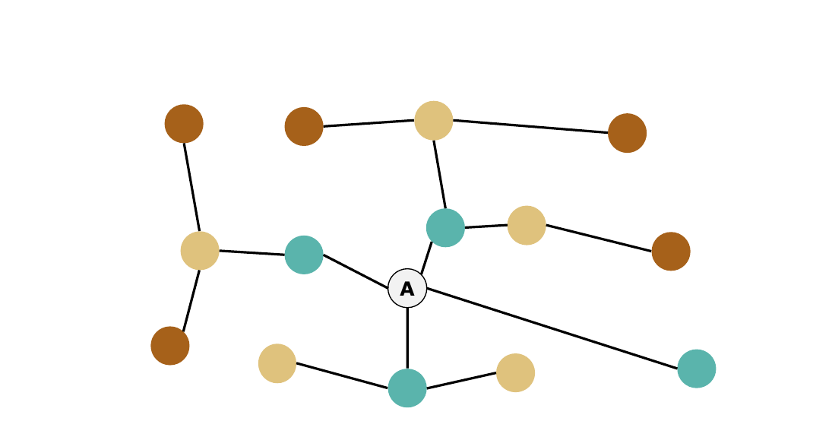
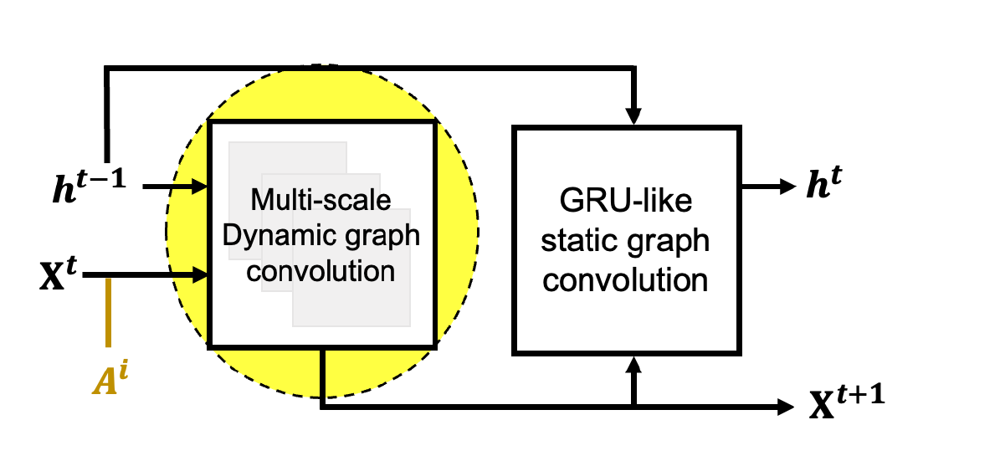
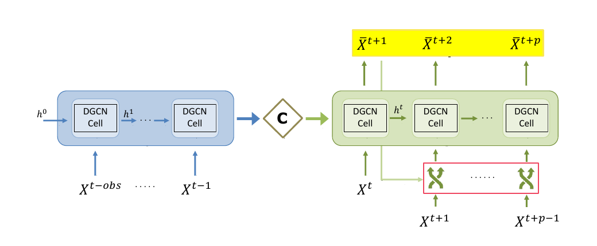
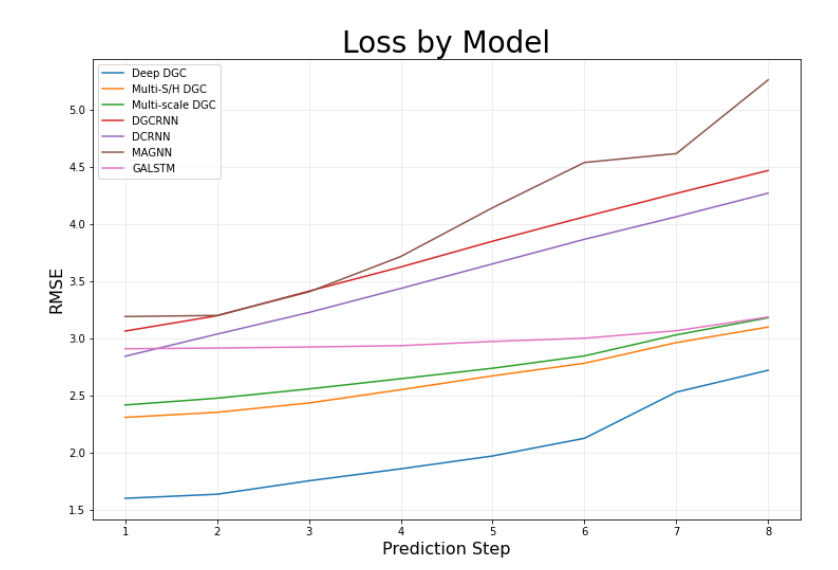
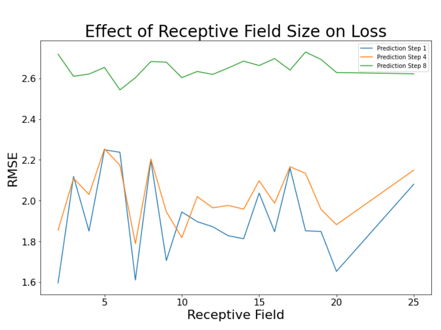

Technical Walkthrough
How the rideshare forecasting model was built.
This page goes one level deeper than the project overview: how Chicago was represented as a graph, how information moved through the model, which variants were tested, and how the final approach was evaluated.
01 · Problem formulation
The city becomes a graph, and demand becomes a sequence over that graph.
The model does not predict one citywide demand value. It predicts pickup demand for every census tract, at several future time steps, using the recent demand history across the whole network.
The transportation network is represented as G = (V, E, A). Each node is a Chicago census tract, the edges describe relationships between tracts, and the adjacency representation A tells the model how information can move through the network.
Equation 1 · Spatiotemporal graph representation
\(V_n\) is the set of census-tract nodes, \(\mathcal{E}\) represents their connections, \(A\) describes the graph structure, and \(X\) stores demand over time.
Equation 2 · Sequence-to-sequence prediction task
The input contains \(m\) observed time steps and the output contains \(p\) future time steps. In this experiment, \(m=10\), \(p=8\), and \(C=1\) because only pickup demand was modeled.
N774 census-tract nodesC1 demand variable: pickupsm10 observed time stepsp8 future prediction stepsΔt15 minutes per time step02 · Graph convolution
A node learns from more than its own demand history.
Graph convolution lets information from one census tract be combined with information from connected tracts. A receptive field controls how far that information can travel before the prediction is made.
A 1-hop receptive field reaches directly connected areas. A 2-hop field reaches areas connected through one intermediate node. Increasing k lets the model aggregate information from progressively farther parts of the network.
Equation 3 · Graph convolutional layer
The normalized graph term \(\widetilde{D}^{-\frac{1}{2}}\widetilde{A}\widetilde{D}^{-\frac{1}{2}}\) gathers information from connected nodes. \(H^{(l)}\) is the current node representation, \(W^{(l)}\) contains learned weights, and \(\sigma\) applies the layer's activation.

Receptive-field illustration from the report. Different colors show progressively farther graph neighborhoods around node A.
03 · Richer network information
The graph was built from more than one definition of “close.”
The project created several relationships between census tracts so the model could use both physical geography and socioeconomic similarity.
- Neighbor matrixBinary connection: whether two census tracts directly share a boundary.
- Distance matrixCentroid-to-centroid geographic distance between census tracts.
- Socioeconomic matrixSimilarity based on average housing income, housing density, and population density using Pearson correlation.
Equation 4 · Direct-neighbor adjacency matrix
This is the simplest of the three network relationships: two tracts are connected with a value of 1 when they directly share a boundary, and 0 otherwise.
Network topology aggregator: the proposed model uses the network-characteristic data to form a compact graph representation that can be supplied alongside current demand.
04 · Proposed model variants
Three extensions tested different ways of giving the model more spatial context.
All three approaches extend the Dynamic Graph Convolution framework used as the starting point for the project.
Uses multiple network resolutions so the model can aggregate demand patterns across different spatial reaches.
Adds the second receptive-field pathway together with the network topology aggregator.
Adds another graph-convolution layer and the network topology aggregator to extract richer spatiotemporal features.

The modified DGC module combines current demand, the previous hidden state, and the network representation before passing information onward.
05 · Sequence-to-sequence forecasting
The graph module sits inside an encoder-decoder that turns recent history into a sequence of future predictions.
The encoder processes the observed demand sequence and summarizes it in a context state. The decoder then starts from that context and generates the future demand sequence one step at a time.

Encoder-decoder architecture from the report: 10 observed time steps are summarized, then the decoder generates 8 future demand estimates.
06 · Experiment setup
Training and testing were separated in time.
The model was trained on eight months of 2021 rideshare data and evaluated on a later 45-day period in late 2022. Inputs were normalized, a validation split was used during training, and early stopping limited unnecessary updates.
| Framework | TensorFlow / Python |
|---|---|
| Optimizer | Adam |
| Learning rate | 0.005 |
| Decay rate | 0.001 |
| Batch size | 32 |
| Maximum epochs | 128 |
| Early-stopping patience | 5 epochs |
| Receptive field k₁ | 2 |
| Second receptive field k₂ | 9 for variants using the second field |
07 · Results
Deep DGC produced the lowest test error at every forecast step.
Performance was measured with root mean squared error (RMSE). RMSE is in the same general scale as the demand values: lower is better. The important pattern is how each method changes as the forecast moves farther into the future.

Test error across the eight prediction steps. Deep DGC remains below the other proposed and benchmark approaches throughout the forecast.
Long-horizon behavior: after roughly the fourth prediction step, several benchmark methods degrade more sharply, while the three proposed methods remain comparatively consistent.
08 · Sensitivity analysis
How dependent was Deep DGC on the chosen receptive-field size?
The receptive field was varied from 2 to 25 and checked at early, middle, and late prediction steps. The goal was to see whether performance changed dramatically when the spatial reach changed.

Sensitivity analysis from the report. The similar overall effect across different prediction steps was interpreted as evidence that the model remained relatively stable across short- and long-term forecasting.
09 · Technical takeaway
The improvement came from giving the forecasting model a richer view of both space and time.
The proposed extensions let demand information travel across multiple spatial scales, added explicit network-characteristic data, and increased the depth of the graph processing. In the reported experiment, the Deep DGC variant performed best across the full two-hour prediction horizon.
Want to go deeper into the technical details?
If you have questions about the model, experiment, or results, feel free to reach out.